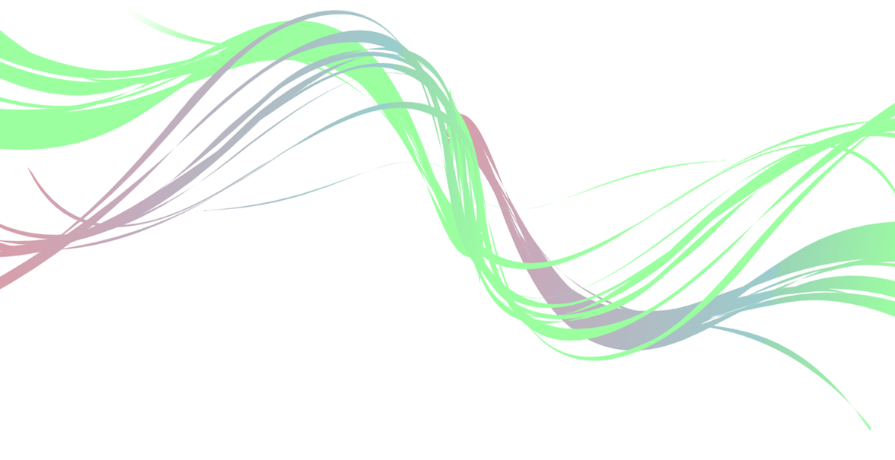

Somos una nueva cooperativa formada por profesionales con amplia trayectoria en media, dedicada exclusivamente al desarrollo de software libre. A través de la creatividad, la experiencia y los aportes de nuestros compañeros, y de toda la comunidad, integramos herramientas libres, con el fin de generar productos innovadores, que a su vez puedan ser reutilizados, fomentando e incentivando al desarrollo de tecnologías libres en nuestro país y en el resto del mundo.
Nuestro principal producto, MBC PLAYOUT, es un sistema integral con plataforma digital, para el armado y transmisión de canales de televisión. Esta plataforma técnica y operativa, está diseñada y programada según los estándares HTML5 (web - internet), abarcando las distintas posibilidades para la transmisión de señal por aire, web, y televisión digital, simultáneamente.
ZUMO es un software en relación directa con todos nuestros productos, que se encarga de trascodear automáticamente y bajo una misma resolución el material ingestado igualando el formato, y optimizando el espacio de almacenamiento. Con zumo todos ganan!
TETRA es un servicio de automatización de cámaras de televisión que cuenta con equipamiento y soporte open source pensados para la televisión digital. es una solucion integral, competitiva, segura y robusta para el desarrollo, armado y emision de programas de television, pensada en pos de la usabilidad y la comodidad a través de la optimización de hardware y software.
Si te interesa colaborar con alguno de nuestros proyectos visita nuestros repositorios en
GitHub.
Por cualquier otra consulta o comentario contáctanos en info@opcode.coop